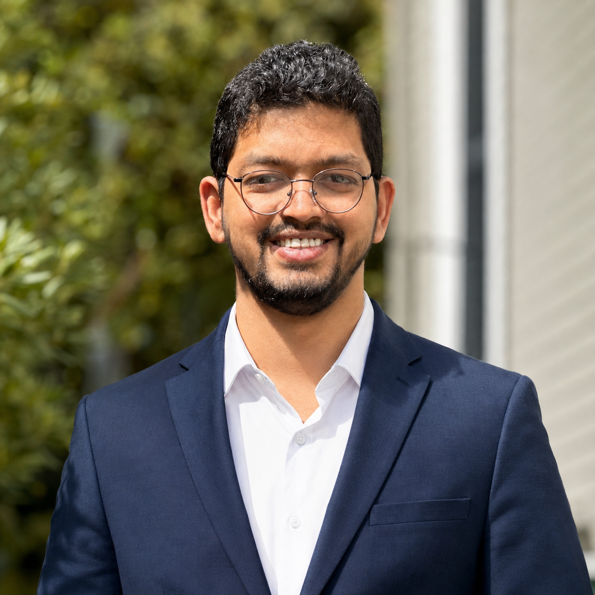

Staff Scientist · Materials Science & Engineering · Penn
I am a Staff Scientist in the Department of Materials Science and Engineering at the University of Pennsylvania, working with Prof. Eric A. Stach. Before this position I completed my postdoctoral research at Penn, and I received my PhD in Chemistry and Materials Science from the Materials Research Centre, Indian Institute of Science, under Prof. N. Ravishankar.
My work centers on atomic-scale structural characterization of functional inorganic materials including nanomaterials, thin films, semiconductors and ferroelectric systems to establish well-defined structure-property relationships that inform the rational design of materials for targeted technologies. To this end I use electron microscopy and associated spectroscopies (STEM-EDS-EELS and 4D-STEM), along with in-situ experiments under external stimuli including heating, biasing and gases.
I trained as a chemist before I became a microscopist. After a BSc (Hons.) in Chemistry at Kirori Mal College, University of Delhi, I joined the Integrated PhD program at the Materials Research Centre, Indian Institute of Science, where I spent seven years learning to make materials by hand and then to look at them properly - first an MS in Chemical Sciences, then a PhD with Prof. N. Ravishankar on designed synthesis and electron microscopy of layered material hybrids.
That combination, synthesis in one hand, atomic-resolution imaging in the other, is still how I work. I moved to the University of Pennsylvania in 2022 as a postdoctoral fellow in Prof. Eric A. Stach's group and am now a Staff Scientist in the Department of Materials Science and Engineering, where I support and run advanced electron microscopy across a wide range of materials: ferroelectric nitrides and oxides, 2D semiconductors and heterostructures, kagome metals, catalysts, solid-state battery interfaces and additively manufactured alloys.
What I care about is the link between what a material is and what it does. A defect, an interface, an ordered vacancy channel are the things that decide whether a device switches at low voltage or a catalyst stays selective. My job is to find them, image them at the atomic scale, and occasionally watch them perform. Much of my recent work is atomic scale structural investigation of ferroelectric and semiconductor materials. The structure then has to be described precisely enough to enable rational design and engineering.
Happy to chat about materials science problems - and about microscopy, always.

headshot
drop a portrait here
Two connected areas: making the material, then seeing what it actually is.
Routes
Output1D & 2D nanomaterials, heterostructures, epitaxial thin films
Probes
MeasuredAtomic positions, defects & vacancy order, interface chemistry, local bonding
Properties tested
ResultDesign rules linking a specific structural feature to device performance
Area 1 · Synthesis
Morphology-controlled solution chemistry gives 1D and 2D nanostructures whose shape, phase and interfaces can be tuned deliberately; ion-exchange routes turn those into hollow architectures and heterostructures. Sputtering and pulsed laser deposition extend the same control into epitaxial thin films, where devices are actually built.
Area 2 · Microscopy
Atomic-resolution STEM with EDS, EELS and 4D-STEM resolves the features that set behaviour: individual defects, ordered vacancy channels, strain and the chemistry of a buried interface.
In-situ characterization takes this further. Rather than comparing a sample before and after, I apply the stimulus inside the microscope including heating, electrical bias, controlled environment and record the transformation as it happens, so nucleation, phase change, defect motion and interface degradation are measured along a real pathway instead of inferred from endpoints.
Primary instrument: JEOL NEOARM (200/80 kV), JEOL F200 (200/80 kV). Supporting methods: X-ray diffraction, SEM, FIB-SEM, ToF-SIMS, electrochemical characterization.
Four recent papers where microscopy set the conclusion.
Google Scholar →Advanced Functional Materials
ACS Applied Materials & Interfaces
Environmental Science: Nano
Chemistry of Materials
Always-current lists on Google Scholar, ResearchGate and ORCID.
S. Acosta, J. Tan, R. K. Rai, M. D'Agati, S. Leontsev, M. Newburger, M. Page, E. A. Stach, R. Olsson
IEEE Sensors Journal
Y. Zhang, R. K. Rai, G. Esteves, Y. Wang, D. M. Jariwala, E. A. Stach, R. H. Olsson
ACS Applied Materials & Interfaces — just accepted
L. N. Capaldi, J. Ford, S. Fulco, R. K. Rai, W. Yang, S. Ching, E. A. Stach, K. T. Turner, W. Chen, O. A. Tertuliano
PNAS 123 (20), e2522790123
C. Leblanc, H. Cho, Y. Zhang, S. Song, Z. Anderson, Y. He, C. Chen, R. K. Rai, J. M. Redwing, E. A. Stach, R. H. Olsson, D. Jariwala
Device 4 (3), 2025
X. Tong, P. Yousefian, Z. Wang, M. A. Saravanan, R. K. Rai, G. Esteves, E. A. Stach, R. H. Olsson
IEEE Electron Device Letters
P. M. Laxmeesha, R. Dutta, R. K. Rai, S. Sheikh, M. F. DiScala, U. M. Jayathilake, A. Velic, T. Tandon, T. D. Tucker, C. Klewe, H. Ambaye, T. Charlton, T. L. Lee, E. A. Stach, K. W. Plumb, A. X. Gray, S. J. May
APL Materials 14, 011114 (2026)
Z. Hu, H. Cho, R. K. Rai, K. Bao, Y. Zhang, Y. He, Y. Ji, C. Leblanc, K.-H. Kim, Z. Han, Z. Qiu, X. Du, E. A. Stach, R. Olsson, D. Jariwala
Nano Letters 25 (37), 13748–13755
J. F. Weaver, S. Xiang, J. Jamir, U. Kust, L. Rämisch, A. Grespi, H. Wallander, J. Zetterberg, S. Arias, E. Fornero, P. K. Routh, S. Zhang, J. S. Miller, R. K. Rai, E. A. Stach, J. A. Boscoboinik, M. M. Montemore, E. C. H. Sykes, J. Knudsen, J. Biener, L. R. Merte, A. I. Frenkel
Angewandte Chemie 137 (49), e202513844
R. K. Rai, N. Goyal, R. Ram, K. Jagdish, D. Gupta, N. Bhatt, N. Ravishankar
Chemistry of Materials 37 (1), 441–452, 2025
R. K. Rai, R. S. Maia, Y. Shi, P. Psarras, A. Vojvodic, E. A. Stach
Environmental Science: Nano 12 (5), 2630–2646
J. A. Santana, D. Bugallo, A. Mirea, T. D. Tucker, D. A. Gonzalez-Narvaez, A. Rosario-Crespo, Y. Sanchez-Navarro, G. Marrero-Hernandez, K. Rosa-Dieppa, A. Garcia-Ramos, R. K. Rai, E. A. Stach, S. J. May, A. M. Rappe
Chemistry of Materials 36 (24), 11814–11821, 2024
Y. Yun, L. Wu, D. Behrendt, P. Musavigharavi, D. K. Pradhan, Y. He, Y. Guo, R. K. Rai, S. Zhou, C. L. Johnson, E. Stach, J. C. Agar, B. M. Hanrahan, D. Jariwala, R. H. Olsson, A. M. Rappe, J. E. Spanier
Advanced Materials, 2501931
S. Ohta, N. Singh, R. K. Rai, H. Koh, Y. Zhang, W. Suk, M. J. Palmer, S. J. Hwang, M. Jones, C. Wang, C. Ling, K. S. Masias, E. Stavitski, J. Sakamoto, E. A. Stach
Joule, 2024 — with Toyota Research Institute
D. Lin, J. Lynch, S. Wang, Z. Hu, R. K. Rai, H. Zhang, C. Chen, S. Kumari, E. A. Stach, A. V. Davydov, J. M. Redwing, D. Jariwala
Nano Letters 24 (44), 13935–13944, 2024
K. Shen, C.-Y. Wang, R. K. Rai, E. A. Stach, J. M. Vohs, R. J. Gorte
Applied Catalysis A: General 682, 119823
U. Khandelwal, R. S. Sandilya, R. K. Rai, D. Sharma, S. R. Mahapatra, D. Mondal, N. Bhat, N. P. Aetkuri, S. Avasthi, S. Chandorkar, P. Nukala
Applied Physics Reviews 11 (2) — featured article
P. M. Laxmeesha, T. D. Tucker, R. K. Rai, S. Li, M. W. Yoo, E. A. Stach, A. Hoffmann, S. J. May
Journal of Applied Physics 135, 085302 (2024)
S. Vura, S. K. Parate, S. Pal, U. Khandelwal, R. S. S. Ventrapragada, R. K. Rai, S. H. Molleti, V. Kumar, G. Patil, M. Jain, A. Mallya, M. Ahmadi, B. Kooi, S. Avasthi, R. Ranjan, S. Raghavan, S. Chandorkar, P. Nukala
Nature Communications 15 (1), 1428
D. Mondal, S. R. Mahapatra, A. M. Derrico, R. K. Rai, J. R. Paudel, C. Schlueter, A. Gloskovskii, R. Banerjee, F. M. F. de Groot, D. D. Sarma, A. Narayan, P. Nukala, A. X. Gray, N. P. B. Aetukuri
Nature Communications 14 (1), 6210
M. Marchi, E. Raciti, S. M. Gali, F. Piccirilli, H. Vondracek, A. Actis, E. Salvadori, C. Rosso, A. Criado, C. D'Agostino, L. Forster, D. Lee, A. C. Foucher, R. K. Rai, D. Beljonne, E. A. Stach, M. Chiesa, R. Lazzaroni, G. Filippini, M. Prato, M. Melchionna, P. Fornasiero
Advanced Science, 2303781
K. Shen, J. Chang, R. K. Rai, C.-Y. Wang, E. A. Stach, R. J. Gorte, J. M. Vohs
Journal of Physical Chemistry C 127 (31), 15591–15599
D. Singh, S. Singh, P. Kechanda Prasana, R. K. Rai, P. Chirawatkul, S. Chakraborty, M. Fichtner, P. Barpanda
Inorganic Chemistry 62 (31), 12345–12355 — issue cover
K. Shen, M. Fan, R. K. Rai, E. A. Stach, R. J. Gorte, J. M. Vohs
Journal of Solid State Chemistry 323, 124055, 2023
S. Vura, R. K. Rai, P. Nukala, S. Raghavan
Thin Solid Films 758, 139456, 2022
Koushik J., R. K. Rai, M. Pandey, U. Chandni, N. Ravishankar
Journal of Physical Chemistry C 126 (35), 15001–15010, 2022
R. K. Rai, B. Sarkar, R. Ram, K. K. Nanda, N. Ravishankar
Sustainable Energy & Fuels 6, 1708, 2022
C. Murugesan, S. P. Panjalingam, S. Lochab, R. K. Rai, X. Zhao, D. Singh, R. Ahuja, P. Barpanda
Nano Energy 89, 106485, 2021
L. Sharma, N. Bothera, R. K. Rai, S. Pati, P. Barpanda
Journal of Materials Chemistry A 8 (36), 18651–18658, 2020 — issue cover
R. K. Rai, S. Islam, A. Roy, G. Agarwal, A. K. Singh, A. Ghosh, N. Ravishankar
Nanoscale 11, 870–877, 2019
N. Goyal, R. K. Rai
In S. Gulati (ed.), Metal–Organic Frameworks (MOFs) as Catalysts, Springer Singapore, 731–764, 2022
Koushik J., R. K. Rai, N. Ravishankar
Microscopy and Microanalysis 28 (S1), 2442–2443, 2022
N. Goyal, R. Ram, R. K. Rai, N. Ravishankar
Microscopy and Microanalysis 28 (S1), 2404–2406, 2022
Koushik J., R. K. Rai, N. Ravishankar
Microscopy and Microanalysis 28 (S1), 1976–1977, 2022
R. K. Rai, B. Sarkar, R. Ram, N. Ravishankar
Microscopy and Microanalysis 27 (S1), 670–672, 2021
R. K. Rai, R. Ram, N. Ravishankar
Microscopy and Microanalysis 27 (S1), 666–668, 2021
N. Goyal, R. K. Rai, R. Ram, N. Ravishankar
Microscopy and Microanalysis 27 (S1), 648–649, 2021
R. K. Rai, S. Islam, A. Roy, G. Agrawal, A. K. Singh, A. Ghosh, N. Ravishankar
Microscopy and Microanalysis 26 (S2), 2338–2340, 2020
Poster presentation
APMC 2020
Poster presentation
EMSI International Conference 2018
Poster presentation
EMSI International Conference 2017
“Seeing is believing: imaging atoms”
Invited talk, Kirori Mal College, University of Delhi
“Electron microscopic investigation of phase transformation in nanostructured WO₃”
International Conference on Materials Science and Engineering
June 2026 — present
Materials Science & Engineering, University of Pennsylvania
June 2022 — May 2026
Materials Science & Engineering, University of Pennsylvania
Jan — May 2022
Centre for Nanoscience and Engineering (CeNSE), IISc Bangalore
Aug — Dec 2021
Materials Research Centre (MRC), IISc Bangalore
2016 — 2021
Integrated PhD, MRC, IISc Bangalore
DissertationDesigned synthesis and electron microscopy investigation of layered material hybrids for targeted applications
2014 — 2016
Integrated PhD, MRC, IISc Bangalore
2011 — 2014
Kirori Mal College, University of Delhi
April 2026
Guest class on 4D-STEM and associated techniques - MSE 610: Transmission Electron Microscopy and Crystalline Imperfections, Penn
Jan — April 2023
Teaching assistant, MSE 610: Transmission Electron Microscopy and Crystalline Imperfections - Prof. Eric A. Stach, Penn
Jan — April 2018
Teaching assistant, Electron Microscopy in Materials Characterization - Prof. N. Ravishankar, IISc Bangalore
Aug — Dec 2017
Teaching assistant, Structure of Materials (undergraduate) - Prof. N. Ravishankar, IISc Bangalore
Life member, Electron Microscopy Society of India (EMSI)
Open to collaborations in semiconductor research and microscopy.
Office
Room 223
Laboratory for Research on the Structure of Matter
University of Pennsylvania
3231 Walnut Street
Philadelphia, PA 19104